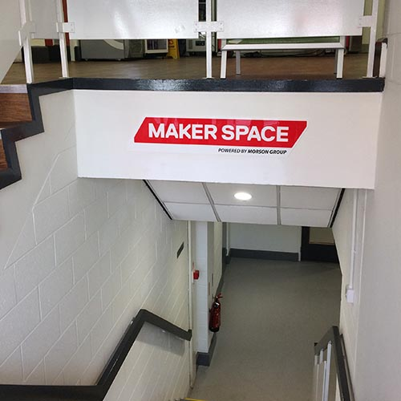
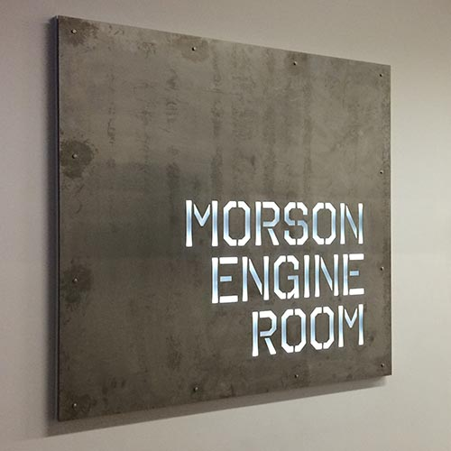

Find Us
Newton Building, Peel Park Campus

Newton Basement Maker Space
Enter the Newton Building through the main entrance, opposite the Cockroft Building and the Business School. Take the stairs immediately in front of you down to the basement and continue all the way to the back.
You can call the basement room on (0161 29) 50276 if you get lost.

Morson Engine Room
Again, enter through the Newton Building main entrance but this time head up the stairs to the ground floor. Go through the double doors to the right of the cafe stand and follow the corridor to the left. All the way at the end of the corridor follow the signs for the wind tunnels.
You can call the Morson Engine Room on (0161 29) 50705, but we're not always there. Try the basement if you can't get through.